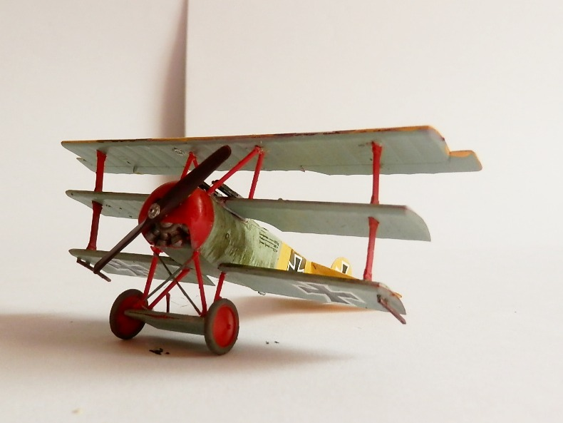
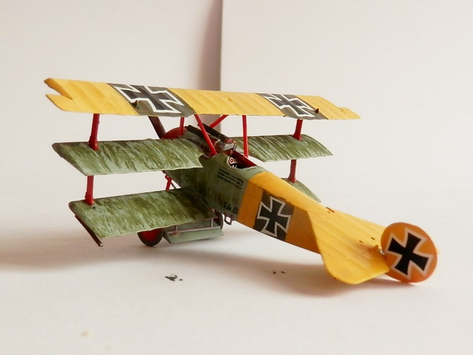
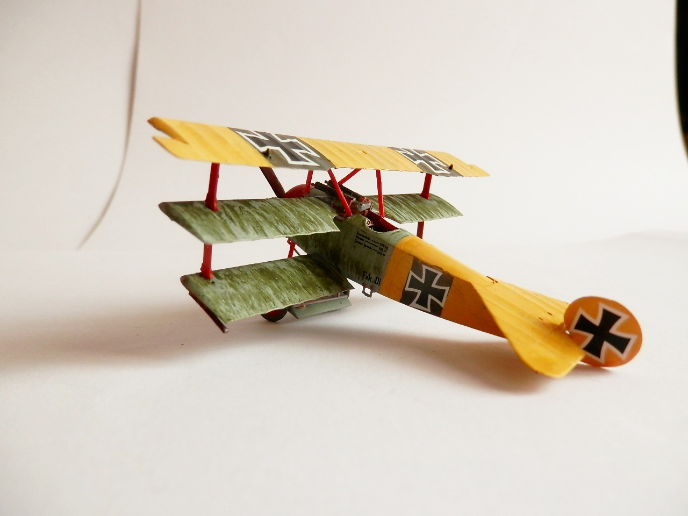
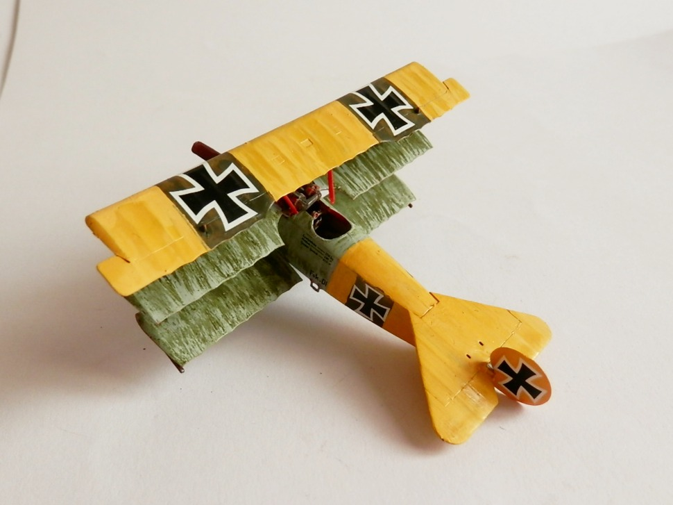

Aerei · scale model archive
Fokker Dr. I
Fokker Dr. I — Kit: Revell, Scale: 1/72. KG4 Jasta 11 1927. This machine was flown by Lothar von Richthofen, brother of the (in)famous Red Baron, he…

Photo gallery



English description
KG4 Jasta 11 1927. This machine was flown by Lothar von Richthofen, brother of the (in)famous Red Baron, he survived the war
Descrizione italiana
KG4 Jasta 11, 1927. Questo velivolo fu pilotato da Lothar von Richthofen, fratello del celebre Barone Rosso; sopravvisse alla guerra.